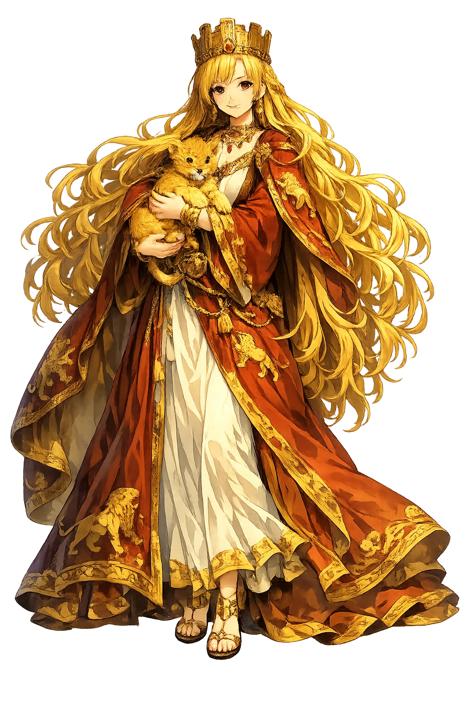

Ancient Domain
Rhéā is the Titaness who gave birth to the Olympian gods and saved the youngest, Zeus, from being swallowed by his father Kronos. She is the mountain mother, the fertile earth, and the cunning protector of divine succession.
Extended Lore
Etymology · Phonology · Orthography · Cultural Legacy · Primary Sources

Essential information about Rhéā, Motherhood, Fertility, Titans
From original script to Unicode restoration
Rhéā is Tier 2 because the Greek Ῥέα preserves the acute stress on the second syllable and length on the final alpha, but the stress and length fall on different syllables. She is the great mother of the Olympian generation.
Character-by-character philological analysis
| Character | Unicode | Name | Block | Phonetic Role |
|---|---|---|---|---|
| R | U+0052 | Latin Capital Letter R | Basic Latin | Same, capitalized |
| h | U+0068 | Latin Small Letter H | Basic Latin | Same |
| é | U+00E9 | Latin Small Letter E with Acute | Latin-1 Supplement | Acute on e |
| ā | U+0101 | Latin Small Letter A with Macron | Latin Extended-A | Macron on a |
The Tier 1 classification reflects how much of the original phonology this restoration preserves — stress and vowel length for Greek names, distinctive letters and diacritics for every other tradition.
From ancient cult to modern Unicode
Rhéā is the Titaness who gave birth to the Olympian gods and saved the youngest, Zeus, from being swallowed by his father Kronos. She is the mountain mother, the fertile earth, and the cunning protector of divine succession.
Rhéā was identified with the Anatolian Great Mother Cybele and, to some extent, with the Cretan mother of Zeus. The Romans called her Ops, the goddess of abundance and the consort of Saturn. Her cult blurred into that of Gē, Demeter, and Cybele, all embodiments of the fertile earth. The lion-drawn chariot and tympanon of Cybele were sometimes transferred to Rhea in Hellenistic and Roman art.
Rhéā is the mother without whom there is no Olympus. Her courage in saving Zeus made the Olympian order possible. In modern usage her name labels one of Saturn's moons and appears in fantasy and science fiction as a figure of primordial motherhood. Her myth remains a powerful story of maternal resistance against patriarchal violence.
Restoring Rhéā in a domain name is more than orthographic accuracy. It is a statement that the internet should recognize the full range of human writing — not only the ASCII keyboard.
Common questions about Rhéā, Motherhood, Fertility, Titans, and Unicode restoration
In reconstructed pronunciation, Rhéā is /rʰé.aː/ — approximately 'RHAY-ah' — begin with a breathy 'r', stress the middle syllable, and draw out the final 'ah'..
Rhéā means Flow, ease (from ῥέω) in the greek tradition.
Rhéā is associated with Swaddled stone (Omphalos) (The substitute she gave Kronos to save Zeus), Cretan cave (The hiding place of the infant Zeus on Mount Ida or Dikte), Lion (Her attendant beast in later Cybele-like iconography), Tympanon drum (The percussion instrument of ecstatic mountain cults associated with the Great Mother).
Plain ASCII rhea strips the stress, length, and script that make the name specific. Unicode restoration returns the name to its original written dignity.
Kronos, warned that one of his children would overthrow him, swallowed each infant as Rhea bore them. Rhea wept but was powerless until the birth of Zeus. Then she turned from grieving mother to strategist.
The philological foundations of this restoration
Every claim on this page is grounded in established scholarship. The orthographic restorations follow disciplinary convention. The etymological chain follows the best available reference works. This is not invention — it is resurrection through scholarship.
You have traced the name from its earliest attestation to its Unicode restoration. Now return to the myth. The story is where the name lives.
Back to Lore